One Piece is a Japanese manga series written and illustrated by Eiichiro Oda. It has been serialized in Shueisha's Weekly Shōnen Jump magazine since July 1997, with its individual chapters compiled into over 100 volumes.
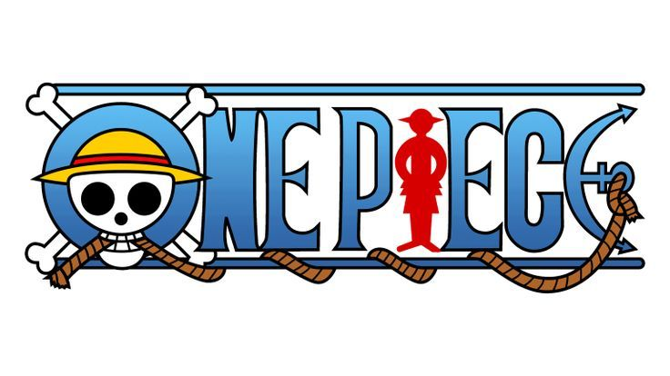About One Piece
The Straw Hat Pirates
Monkey D. Luffy
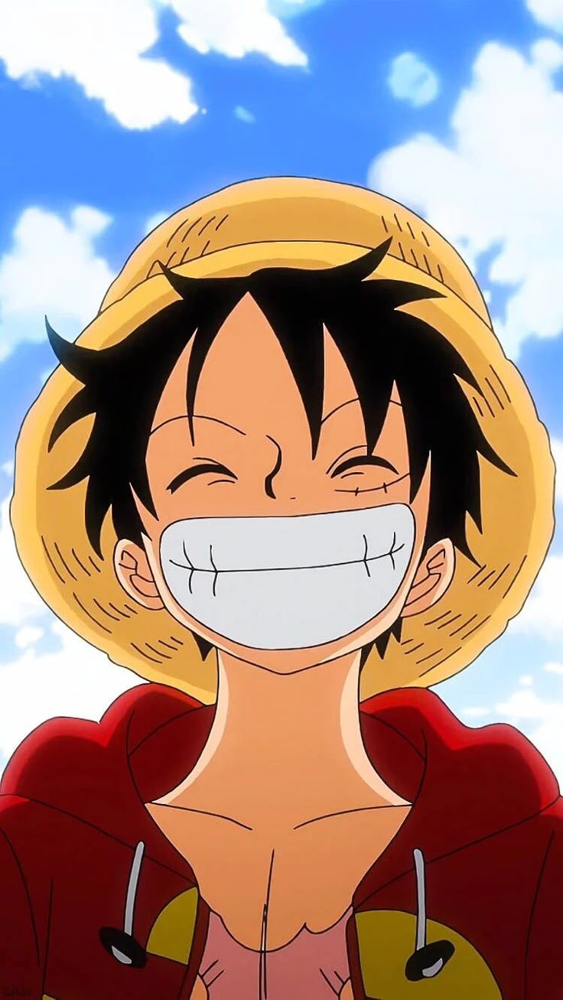Position: Captain
Devil Fruit: Gomu Gomu no Mi (Rubber Human)
Bounty: 3,000,000,000 Berries
Roronoa Zoro
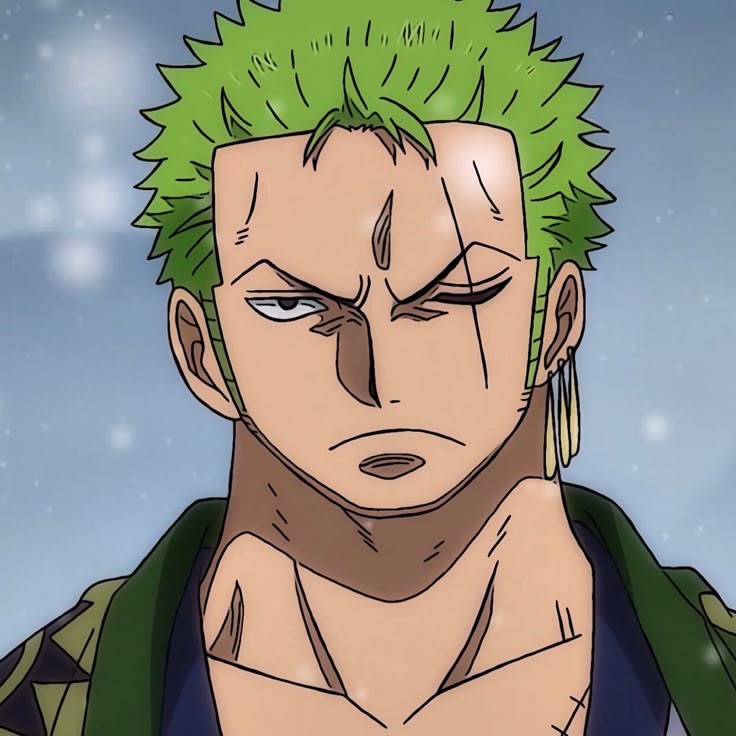Position: Combatant/Swordsman
Style: Three-Sword Style
Bounty: 1,111,000,000 Berries
Nami
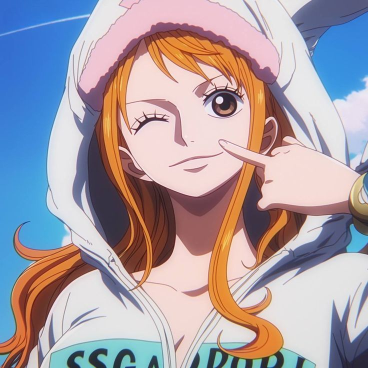Position: Navigator
Weapon: Clima-Tact
Bounty: 366,000,000 Berries
Usopp
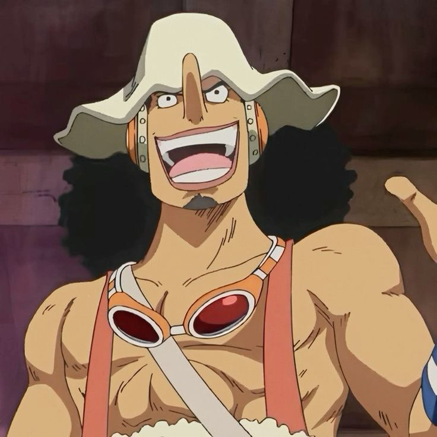Position: Sniper
Skills: Marksmanship, Inventing
Bounty: 500,000,000 Berries
Sanji
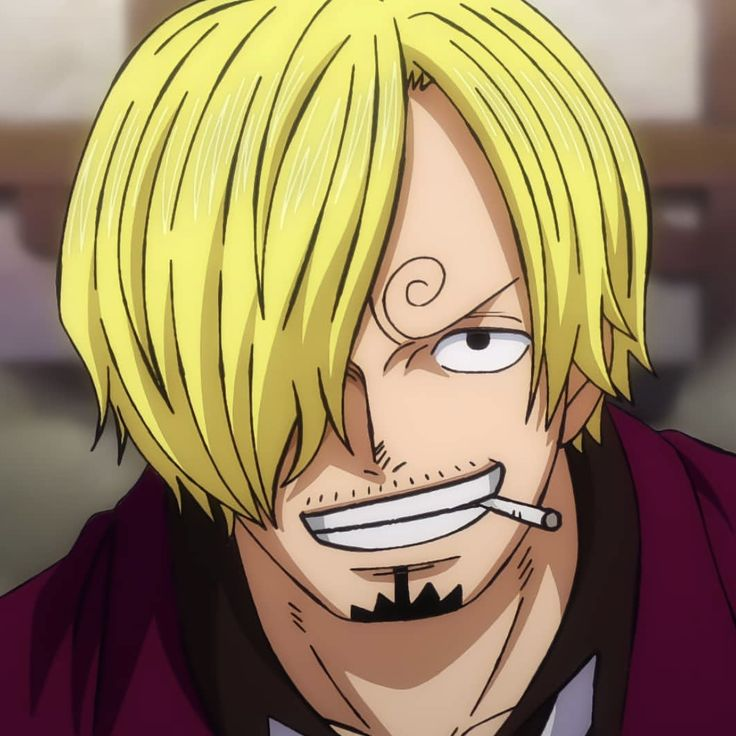Position: Cook
Fighting Style: Black Leg Style
Bounty: 1,032,000,000 Berries
Tony Tony Chopper
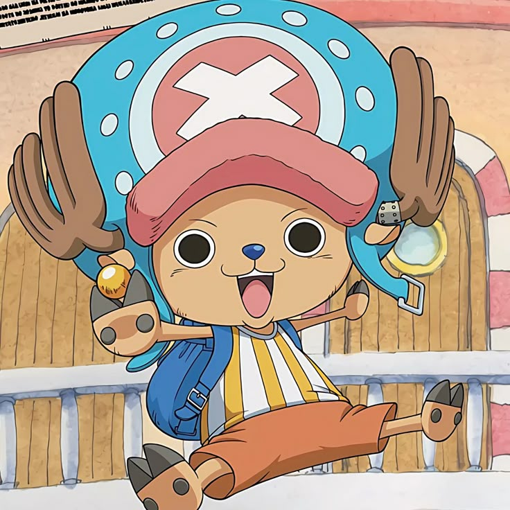Position: Doctor
Devil Fruit: Hito Hito no Mi (Human Human Fruit)
Bounty: 1,000 Berries
Nico Robin
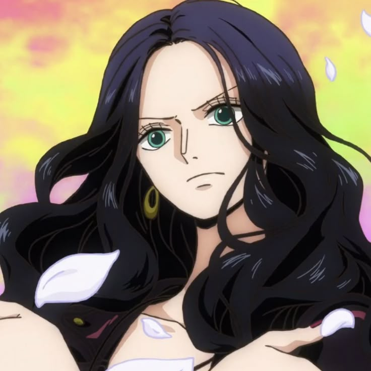Position: Archaeologist
Devil Fruit: Hana Hana no Mi (Flower Flower Fruit)
Bounty: 930,000,000 Berries
Franky
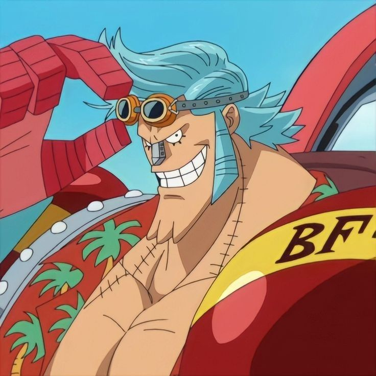Position: Shipwright
Type: Cyborg
Bounty: 394,000,000 Berries
Brook
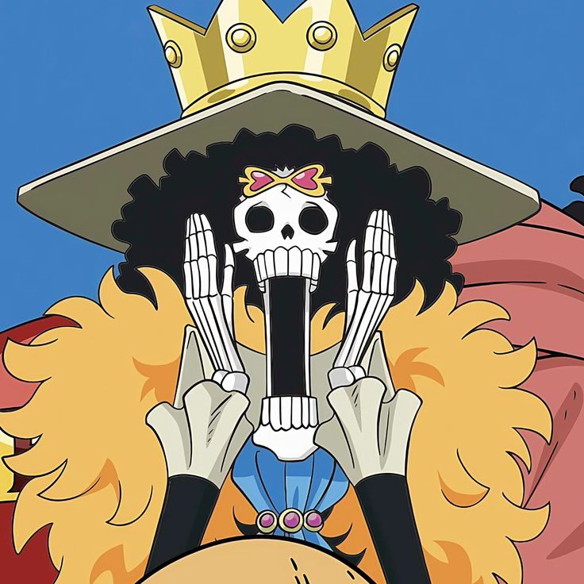Position: Musician
Devil Fruit: Yomi Yomi no Mi (Revive Revive Fruit)
Bounty: 383,000,000 Berries
Jinbe
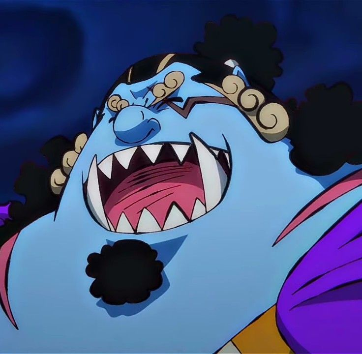Position: Helmsman
Race: Fish-Man
Bounty: 1,100,000,000 Berries
Top 5 Story Arcs
1. Marineford War
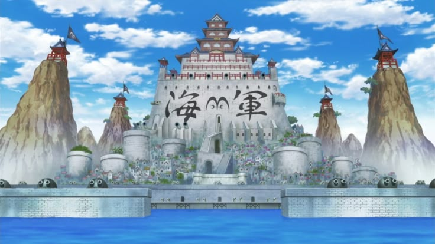Chapters: 550-580
The ultimate war between Whitebeard Pirates and the Marines to save Ace. Features the most powerful characters clashing in an emotional, game-changing battle.
- Shanks stops the war
- Ace's death & Luffy's breakdown
- Timeskip catalyst
2. Enies Lobby
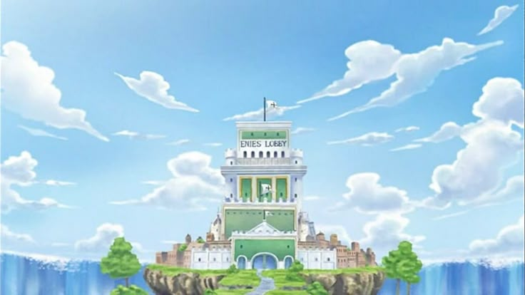Chapters: 375-430
The Straw Hats declare war on the World Government to rescue Robin, featuring epic 1v1 battles and the iconic "I want to live!" moment.
- Gear Second debut
- Usopp vs. Luffy conflict
- Burning the World Government flag
3. Wano Country
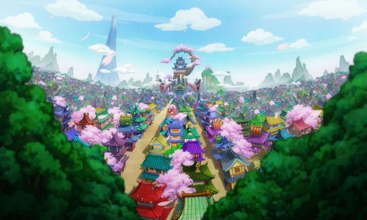Chapters: 909-1057
The climactic battle against Kaido, featuring samurai, Gear Fifth debut, and the most stunning animation in the series.
- Luffy awakens his Devil Fruit
- Zoro's heritage revealed
- Epic rooftop battle
4. Whole Cake Island

Chapters: 825-902
A rescue mission in Big Mom's territory, featuring Luffy's intense battle with Katakuri and Sanji's emotional backstory.
- Luffy masters Future Sight
- Wedding Cake Chase
- Brook vs. Big Mom
5. Alabasta
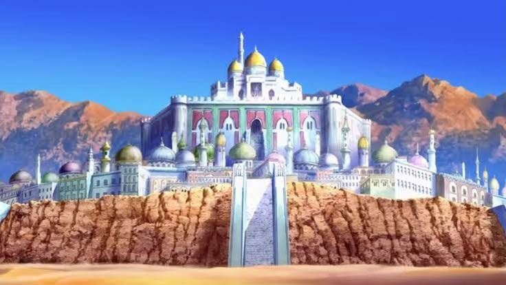Chapters: 155-217
The crew's first major victory against a Warlord (Crocodile), saving the desert kingdom with Vivi's help.
- Robin joins the crew
- Luffy's first major defeat
- Iconic "X" mark scene
Gallery
My one piece
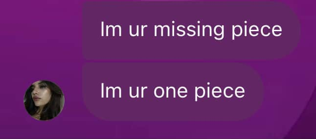